Object-Level Change Detection from a Few Photos with a Gaussian Splat Memory
October 2026 · gsplat, COLMAP, SAM 3, DINOv2
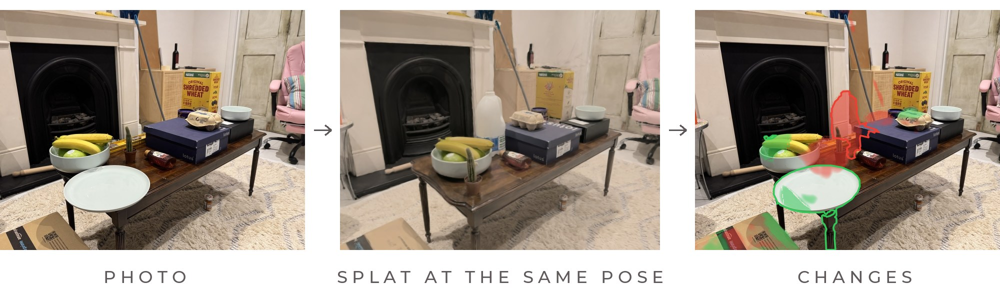
Problem setting
A home robot learns where things usually are during its first days in a house, and after that the house keeps changing without anyone telling it. If it plans on the old memory, it will go looking for objects that are no longer where it last saw them. This project asks how much a robot can work out about those changes from three photos taken as it comes back into a room, before it walks around to collect more views.
The memory here is a 3D Gaussian splat built from one walk through a living room. A splat can be rendered from whatever pose the robot ends up at, so finding what changed becomes a comparison between the rendered memory and the photo from the same viewpoint. Its Gaussians can also be grouped into objects, which lets the answer be one line per object with a confidence instead of a heatmap. The comparison is made with a small model trained on edits of the splat, so it is fitted to the room it works in.
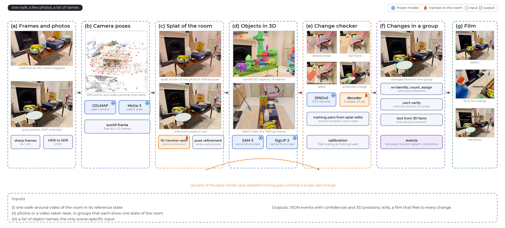
Data
The room is a cluttered living room with about 40 objects on and around a coffee table, many of them plain cardboard boxes that look alike. The reference is a three-minute iPhone walk at roughly one height, filmed the way a robot would see the room while moving through it. I then made 22 change sets, resetting the room between them, and after each one took three photos from wherever I was standing, with 5 photos of the untouched room as a control. Several sets move an object a short way or put an identical copy next to it, so identity has to be judged by position as well as appearance. Some photos are from the sofa side, which the walk never covered closely, and there the system has to say that it cannot verify a change instead of guessing. The only prior about the room is a list of object names written after looking at the photos.
The scope is one static room filmed once, with objects from a few centimetres up to furniture size and changes visible in at least one photo. People moving through the room and objects missing from the name list are outside it.
The iPhone's HDR (HLG) video is tone-mapped to SDR bt709 while decoding, because a plain decode looks flat and grey next to the photos. The splat is trained on 276 frames, the sharpest frame of each of 64 time slices plus 220 others, and the last 20% of the walk by time is kept for calibration.
Method
Camera poses and Gaussian splatting
Frames and photos are registered together with pycolmap, so the photos land in the walk's coordinates without a separate alignment. 271 of the 276 frames register at 0.62 px reprojection error, and 70 of the 71 photos at 0.82 px. On an earlier test table, the same splat reached 27.6 dB on held-out frames with SfM poses and 19.6 dB with poses from Pi3X, a feed-forward reconstruction model. The metric scale of the reported runs came from Pi3X. The current code takes it from MoGe-3 depth at the triangulated keypoints, which makes the room about 11% smaller.
The splat is trained with gsplat for 30k steps, which takes 13 minutes on an RTX 4090 and ends at 2.5M Gaussians. Each training frame gets a small colour correction for the phone's auto-exposure drift, and with it held-out frames reach 26.3 dB PSNR against 23.9 dB without. Each photo's pose is then refined by rendering the splat and comparing it with the photo under a Geman-McClure loss. Pixels that do not fit are masked out at every step, since some of them are the changes. 65 of the 71 photos keep the refined pose, and the render there is the predicted view of what the photo should show.
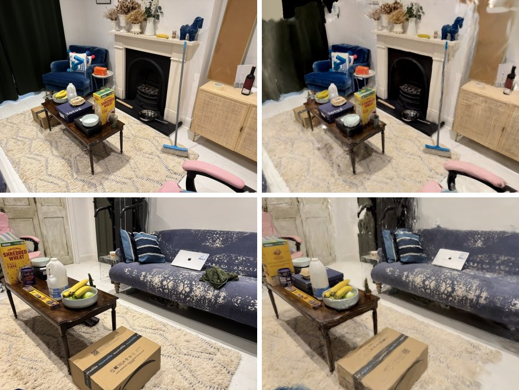
Coverage estimation
Renders also look convincing in places the walk hardly filmed, and those renders are wrong. The splat's accumulated opacity does not reveal them, because the sofa close-ups rendered as solid floaters. Instead, a photo pixel is marked unknown when fewer than three walk cameras saw that 3D point on their own visible surface, and unknown pixels count neither for nor against a change. This separates "nothing changed there" from "that corner was never properly seen", and only the second is a reason for the robot to go and look again.
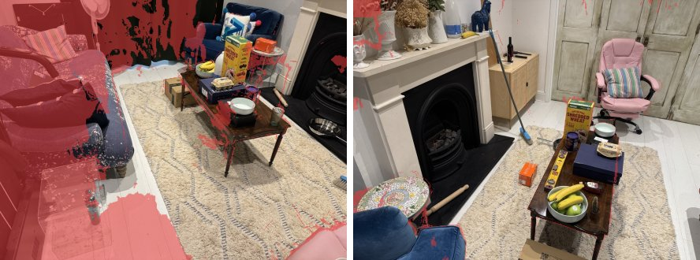
Object inventory
A set of named 3D objects is built from the walk and the name list, with no hand-drawn masks, so that a change can be reported as "the egg carton moved". SAM 3 is prompted with each name on the full frame and on 2 x 2 tiles, so that small objects have enough pixels. Each mask is rendered back through the splat as a loss, and the gradient shows which Gaussians belong to that detection. Detections that share Gaussians across frames become one object, and pieces are merged only if they touch, look alike and stay object-sized. Each name comes from SAM 3's vote shares multiplied by SigLIP 2 zero-shot scores on the four clearest views, so a plain box only gets a confident name when both agree. The result is 96 objects, 14 of them with names marked uncertain. Adding SigLIP 2 changed 23 of the 96 names, mostly for the better.
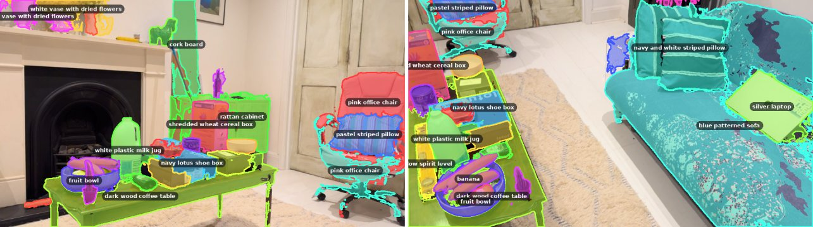
Change classifier trained on synthetic edits
Learning from real changes would mean rearranging the room hundreds of times and labelling every pixel, so the splat is edited instead. Objects are removed, moved or rotated a little, or copied elsewhere, and the edited splat is rendered from the pose of a real walk frame. If the bowl was removed from the render, its pixels in the real frame are labelled "appeared", and the pixels of a copied object are labelled "missing". A third of the pairs have no edit, so the model also sees an unchanged room through a render. Empty footprints are filled with flat inpainted Gaussians, and some unedited renders get a decoy fill so that a filled patch does not give the answer away.
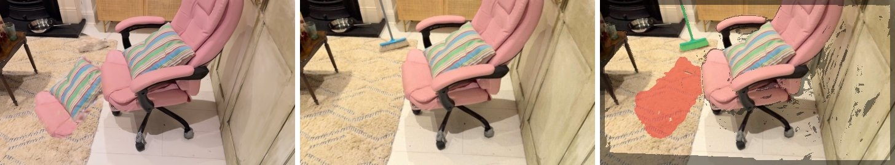
The inputs are DINOv2 features of the render and the photo, reduced to 128 dimensions by PCA, and the difference between the render's depth and the aligned MoGe-3 depth of the photo. A light convolutional decoder, trained with a focal loss, maps these to three classes at quarter resolution, and the outputs are calibrated with Platt scaling. Training takes 3 minutes on 864 pairs from the first 80% of the walk, with 220 pairs from the last 20% for validation. On 48 held-out pairs, hand-written rules on the same inputs found 29% of the edits and made 16 false detections on unedited pairs, against 49% and none with the learned checker.
Change inference
Each set of three photos is judged against the reference alone. In each usable photo, every object is marked present, missing, or covered when something new stands in front of it, using the checker's maps over its rendered mask. SAM 3 is also run on the photo and on a render of the reference from the same pose, so that a new plate beside an identical one is not taken for the original. Leftover detections are clustered in 3D, and each missing object is searched for among the clusters by Hungarian assignment on a calibrated same-object probability. An object found elsewhere has moved, and one found nowhere with a clear view of its old place has been removed. If the old place was not clearly seen, nothing is reported, because calling an object gone after one poor glance is worse for a robot than saying nothing. Clusters that no object claims are reported as added.
An object counts as in place if its detection lies within 0.63 times its size, the 95th percentile for unmoved objects in the held-out walk frames. The other thresholds are a calibrated probability of 0.5 or measured on those frames. Each event's sentence is filled in from a template, for example "The egg carton moved 40 cm (80 % sure)". An earlier version carried beliefs from one set to the next, which spread mistakes forward, and judging each set alone cut the reported changes from 99 to 59.
Each set also gets a film for checking by eye, which flies from the best photo's pose to each change in turn and ends on the real photo with labels.
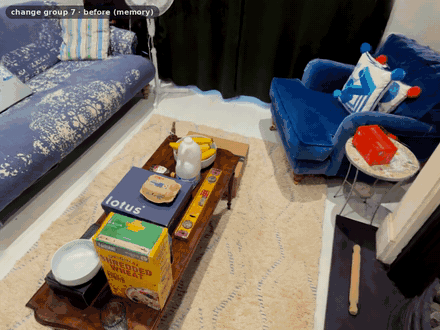
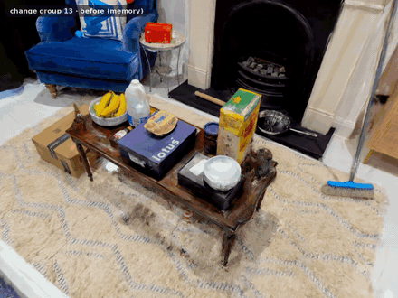
Results
No ground truth for real room changes was available, so I scored the outputs myself, as the person who made the changes. The full pipeline is compared with SceneDiff, a published change-detection method, and with a rule-based version of the pipeline that pairs objects by name. Sets 1 to 13 of the 22 were scored, 106 events in all. For each set, the top events of the three methods (at most four each) were mixed into one list with the method names hidden, and each event got one verdict, such as correct or right object with the wrong type of change. The true number of changes per set was not recorded, so recall is pooled. It is the number of distinct real changes a method found, divided by the number found by any of the three. SceneDiff was run from its public code with DINOv2 instead of DINOv3, and since it is built for two videos rather than three photos, this is a reasonable setup of it and not a tuned one. Intervals are Wilson 95% intervals, and they are narrower than they should be because events cluster within sets.
| Method | Events scored | Precision | Recall, pooled | Type accuracy | Name accuracy |
|---|---|---|---|---|---|
| Full pipeline | 32 | 94% (80-98) | 47% (35-59), 29 of 62 | 80% (61-91) | 100% (87-100) |
| SceneDiff (DINOv2 variant) | 45 | 65% (50-78) | 45% (33-57), 28 of 62 | 65% (45-81) | 91% (73-98) |
| Rules (phrase pairing on the inventory) | 29 | 85% (68-94) | 34% (23-46), 21 of 62 | 50% (27-73) | 100% (78-100) |
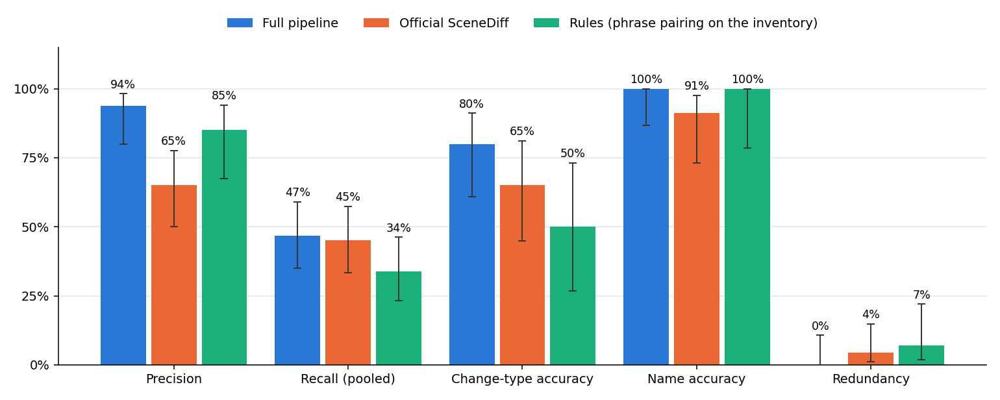
About the same number of the 62 distinct real changes were found with the full pipeline and with SceneDiff (29 and 28). Far fewer wrong events were reported with the pipeline, so its precision is higher (94% against 65%), and the two intervals do not overlap. Change type is the weakest column for all three methods. The 20 cards with the right object and the wrong type are all objects that I had moved, and 18 of them were reported as removed or added, while only 2 cards had the right object with the wrong name. The hard step is deciding that an object in the photo is the same one as in the reference.
Two smaller checks point the same way as the comparison with the rules above. Of 191 splat edits held out from training, 93% are detected by the checker (98% for removed or added objects and 75% for moves of 2 to 5 cm). On the 5 untouched photos nothing is reported with the pipeline and 16 objects with SceneDiff, but 5 photos are too few for a zero to say much about the true rate.
No threshold was fitted on the change sets, but some decisions were made with real sets in view. The rule for when an object counts as newly missing and the matching of detections to object places were adopted after looking at sets 1 and 5, so those two sets are not a clean test of them. The same holds for the threshold that pairs a removal with an addition into one move. The 3% depth limit for dropping a photo and the three-camera rule for known pixels came from work on the real photos, with no record of which sets. The confidences are calibrated on synthetic edits and may be overconfident on real photos, which has not been checked.
Limitations
Naming and identity are weakest for plain boxes. In group 5 the Shredded Wheat box is reported as "kelloggs cereal box added", and the runner-up name of most box events is another box. One object sometimes becomes two events, such as a box reported as removed and then as moved 38 cm in the same set.
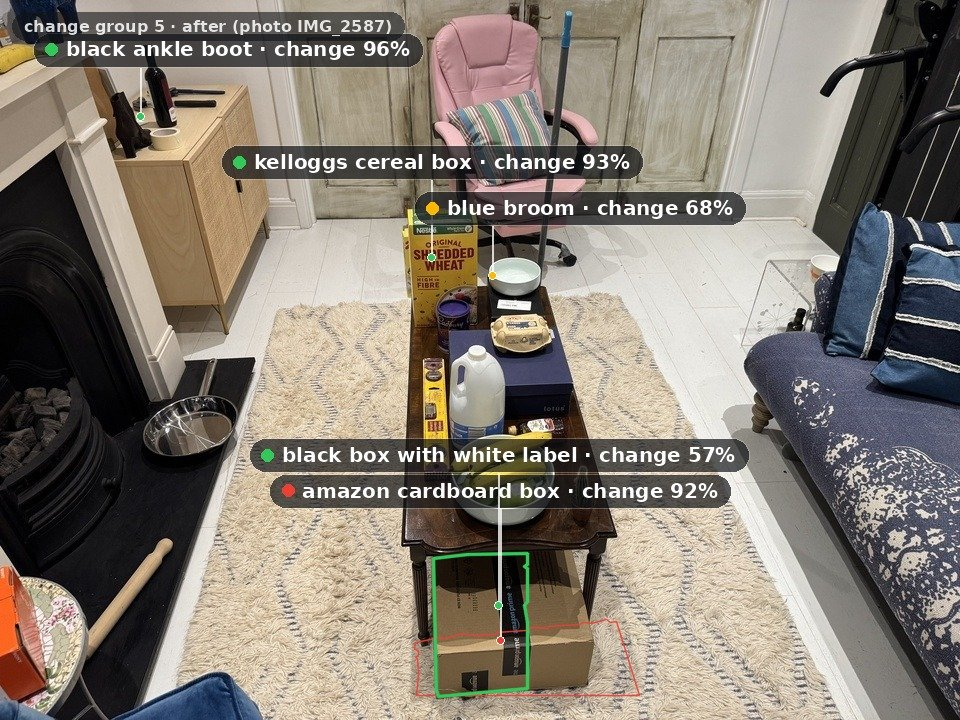
Beyond the identity failures in the table, my impression from the wrong cards, which I did not measure, is that the splat is too poor around small and distant objects, which also weakens the SAM 3 masks on the render, and that occlusion was not a main cause. Better identity matching and a better splat therefore look more useful than more checker training.
The walk covered the coffee table well and the edges of the room badly. 10 of the 71 photos fail the depth-alignment check, including all three photos of group 19, and changes behind the sofa cannot be verified. MoGe-3 and Pi3X disagree on scale by about 11% on this room, which carries into the distances in the films. Only 13 of the 22 sets were scored, by the person who made the changes, in one room filmed once with one phone. This is enough to show that the approach can work, but not how well it carries over to other rooms.
Ongoing work on active re-observation
This part is unfinished, was not in the original version and has not been measured. When an object cannot be verified, the robot should use its splat to choose where to look next. A simulated humanoid about 50 cm across, with its head camera at the walk's height, is placed in the room with the same memory plus a floor map made from it. The room was then rearranged and filmed again, and a splat of this later walk is what the robot's camera renders wherever it stands. The robot never reads the later walk's photos or object list.
Given a sentence such as "check the hammer is here", the robot turns once at the doorway, looks up the object's remembered place and walks to a spot that its memory says has a clear view of it. It plans again whenever something new blocks the path. On arrival it applies the same checker and needs several separate views to agree. If the place is empty it searches the rest of the room, and it ends with one sentence saying where the object is, that it is gone, or that it could not tell.
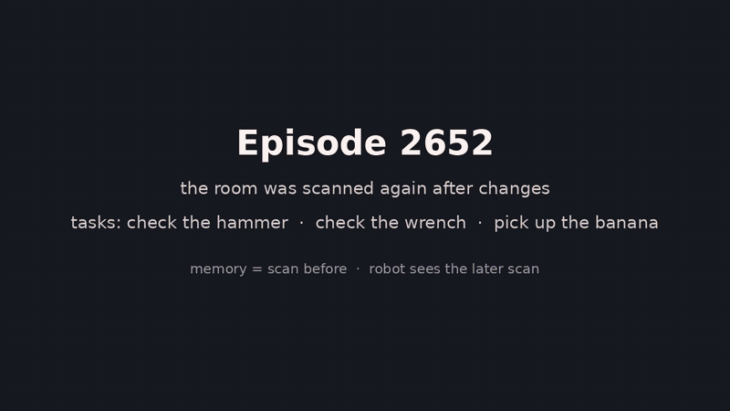
Every rule in this navigation was added after a run that went wrong while I watched these same walks, for example when floaters in the splat were treated as a wall of new obstacles. Because the system was changed while watching these runs, they are not a test of it.
References
- Kerbl et al., 2023. 3D Gaussian Splatting for Real-Time Radiance Field Rendering.
- Ye et al., 2024. gsplat: An Open-Source Library for Gaussian Splatting.
- Schönberger and Frahm, 2016. Structure-from-Motion Revisited (COLMAP).
- Yu et al., 2024. Mip-Splatting: Alias-free 3D Gaussian Splatting.
- Yen-Chen et al., 2021. iNeRF: Inverting Neural Radiance Fields for Pose Estimation.
- Geman and McClure, 1987. Statistical Methods for Tomographic Image Reconstruction.
- Meta, 2025. SAM 3: Segment Anything with Concepts.
- Oquab et al., 2024. DINOv2: Learning Robust Visual Features without Supervision.
- Tschannen et al., 2025. SigLIP 2: Multilingual Vision-Language Encoders.
- Wang et al., 2025. MoGe: Monocular Geometry Estimation for Open-Domain Images.
- Ye et al., 2024. Gaussian Grouping: Segment and Edit Anything in 3D Scenes.
- Cen et al., 2025. Segment Any 3D Gaussians (SAGA).
- SceneDiff, 2025.
- Lu et al., 2025. 3DGS-CD: 3D Gaussian Splatting-based Change Detection for Physical Object Rearrangement.
- Sachdeva and Zisserman, 2023. The Change You Want to See (Now in 3D).
- Platt, 1999. Probabilistic Outputs for Support Vector Machines.
- Guo et al., 2017. On Calibration of Modern Neural Networks.
- Kuhn, 1955. The Hungarian Method for the Assignment Problem.
- Lin et al., 2017. Focal Loss for Dense Object Detection.